A Low Cost Tester of Glaze Melt Fluidity
A One-speed Lab or Studio Slurry Mixer
A Textbook Cone 6 Matte Glaze With Problems
Adjusting Glaze Expansion by Calculation to Solve Shivering
Alberta Slip, 20 Years of Substitution for Albany Slip
An Overview of Ceramic Stains
Are You in Control of Your Production Process?
Are Your Glazes Food Safe or are They Leachable?
Attack on Glass: Corrosion Attack Mechanisms
Ball Milling Glazes, Bodies, Engobes
Binders for Ceramic Bodies
Bringing Out the Big Guns in Craze Control: MgO (G1215U)
Can We Help You Fix a Specific Problem?
Ceramic Glazes Today
Ceramic Material Nomenclature
Ceramic Tile Clay Body Formulation
Changing Our View of Glazes
Chemistry vs. Matrix Blending to Create Glazes from Native Materials
Concentrate on One Good Glaze
Copper Red Glazes
Crazing and Bacteria: Is There a Hazard?
Crazing in Stoneware Glazes: Treating the Causes, Not the Symptoms
Creating a Non-Glaze Ceramic Slip or Engobe
Creating Your Own Budget Glaze
Crystal Glazes: Understanding the Process and Materials
Deflocculants: A Detailed Overview
Demonstrating Glaze Fit Issues to Students
Diagnosing a Casting Problem at a Sanitaryware Plant
Drying Ceramics Without Cracks
Duplicating Albany Slip
Duplicating AP Green Fireclay
Electric Hobby Kilns: What You Need to Know
Fighting the Glaze Dragon
Firing Clay Test Bars
Firing: What Happens to Ceramic Ware in a Firing Kiln
First You See It Then You Don't: Raku Glaze Stability
Fixing a glaze that does not stay in suspension
Formulating a body using clays native to your area
Formulating a Clear Glaze Compatible with Chrome-Tin Stains
Formulating a Porcelain
Formulating Ash and Native-Material Glazes
G1214M Cone 5-7 20x5 glossy transparent glaze
G1214W Cone 6 transparent glaze
G1214Z Cone 6 matte glaze
G1916M Cone 06-04 transparent glaze
Getting the Glaze Color You Want: Working With Stains
Glaze and Body Pigments and Stains in the Ceramic Tile Industry
Glaze Chemistry Basics - Formula, Analysis, Mole%, Unity
Glaze chemistry using a frit of approximate analysis
Glaze Recipes: Formulate and Make Your Own Instead
Glaze Types, Formulation and Application in the Tile Industry
Having Your Glaze Tested for Toxic Metal Release
High Gloss Glazes
Hire Us for a 3D Printing Project
How a Material Chemical Analysis is Done
How desktop INSIGHT Deals With Unity, LOI and Formula Weight
How to Find and Test Your Own Native Clays
I have always done it this way!
Inkjet Decoration of Ceramic Tiles
Is Your Fired Ware Safe?
Leaching Cone 6 Glaze Case Study
Limit Formulas and Target Formulas
Low Budget Testing of Ceramic Glazes
Make Your Own Ball Mill Stand
Making Glaze Testing Cones
Monoporosa or Single Fired Wall Tiles
Organic Matter in Clays: Detailed Overview
Outdoor Weather Resistant Ceramics
Painting Glazes Rather Than Dipping or Spraying
Particle Size Distribution of Ceramic Powders
Porcelain Tile, Vitrified Tile
Rationalizing Conflicting Opinions About Plasticity
Ravenscrag Slip is Born
Recylcing Scrap Clay
Reducing the Firing Temperature of a Glaze From Cone 10 to 6
Simple Physical Testing of Clays
Single Fire Glazing
Soluble Salts in Minerals: Detailed Overview
Some Keys to Dealing With Firing Cracks
Stoneware Casting Body Recipes
Substituting Cornwall Stone
Super-Refined Terra Sigillata
The Chemistry, Physics and Manufacturing of Glaze Frits
The Effect of Glaze Fit on Fired Ware Strength
The Four Levels on Which to View Ceramic Glazes
The Majolica Earthenware Process
The Potter's Prayer
The Right Chemistry for a Cone 6 Magnesia Matte
The Trials of Being the Only Technical Person in the Club
The Whining Stops Here: A Realistic Look at Clay Bodies
Those Unlabelled Bags and Buckets
Tiles and Mosaics for Potters
Toxicity of Firebricks Used in Ovens
Trafficking in Glaze Recipes
Understanding Ceramic Materials
Understanding Ceramic Oxides
Understanding Glaze Slurry Properties
Understanding the Deflocculation Process in Slip Casting
Understanding the Terra Cotta Slip Casting Recipes In North America
Understanding Thermal Expansion in Ceramic Glazes
Unwanted Crystallization in a Cone 6 Glaze
Using Dextrin, Glycerine and CMC Gum together
Volcanic Ash
What Determines a Glaze's Firing Temperature?
What is a Mole, Checking Out the Mole
What is the Glaze Dragon?
Where do I start in understanding glazes?
Why Textbook Glazes Are So Difficult
Working with children
Setting up a Clay Testing Program in Your Company or Studio
Description
Set up a routine testing pipeline and start generating historical data that will enable your staff to understand your source materials and maintain, adjust and troubleshoot your clay body recipes.
Article

A routine testing pipeline is essential, not just to maintaining the properties of your products, but to you understanding the materials you use and products you make from them
This page is for technicians charged with quality control, formulation and adjustment of clay bodies (generally plastic or casting) being sold for use by others. The matters discussed are also applicable to glaze or engobe production. Our method involves:
* A group account at Insight-Live.com where data is collected (this is about accumulating data and managing a lot of it).
* Insight-live is “recipe centric”, production runs and even materials being tests are initially entered as recipes.
* Testing bodies need testing below, above and at service temperature.
* Procedures are defined for testing bodies and materials being used (e.g. feldspar, kaolin, ball clay, fire clay, talc, bentonite).
* Firings each day to handle a pipeline of specimens coming from routine and development testing.
* A photo stream into the system to support measurements.
* A code numbering scheme so that every specimen can be marked and associated with its testing data.
Equipment needed:
* Internet-connected computer(s) in the lab and office.
* A test kiln (or kilns) with cones and schedules for many temperatures, staging area for specimens awaiting firing.
* A propeller mixer (lab pugmill not needed, propeller mixing and dewatering on plaster outdoes any pugmill).
* Workbenches, plaster table, tools for slabbing, cutting, marking clay.
* Tools needing for the SHAB test, SIEV test, DFAC test, LDW test.
* Melt fluidity testers.
* A flexible adhesive label maker (everything ever done needs a code number label).
Companies must deal with the reality that material supplies can be inconsistent and unreliable. Testing that accurately conveys body properties (e.g. fired color, fired maturity, plasticity, glaze fit and particle size distribution) enables comparing current data with historical and adjusting recipes so customers don’t see variations.
Sampling: If you are running thousands of boxes of a run of clay, it is your decision how often to sample it for testing. Likewise, when truckloads of material are received, whether each pallet needs to be tested and what tests need to be run depends on the properties the material adds to your product and your experience with its reliability.
Insight-live enables having hundreds of test bars and specimens “in progress”. With proper code and specimen numbering nothing gets lost. Side-by-side comparison of anything with anything is possible (e.g. past runs with current, test recipes with a production run, production runs with master recipes), this is the "secret weapon" of Insight-live.
Related Information
A modern electric test kiln, a marvel of utility
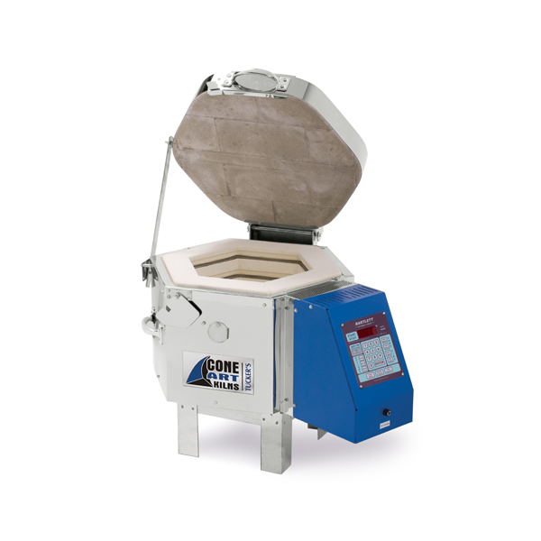
This picture has its own page with more detail, click here to see it.
This is a ConeArt 119D, 0.57 cu ft, 11"x9" cone 10 test kiln. While there is 120v model, don't take a chance, go with 220v (actually ours is 208v). Ours fires 1000 times on a set of elements, mostly in the cone 4-7 range. The old BX controller is shown here, it is $300 cheaper, but don’t even think about getting that! Do not use your electric like a pop-up toaster, make it a technological enabler of custom firing schedules, get the Genesis GX. Having good control of firing is a key to success, and this is superior for that. These kilns are economical to fire. Big enough for 5 mugs, but I typically fire a dozen clay and glaze test specimens. We make our own super-thin shelves. The controller holds about 20 schedules, even controllable remotely (it is Wi-Fi connected). We can fire cone 04 up and down in three hours! Of course, since this type of kiln can enable so much more testing, a code numbering system is needed - and a place to record and search all the results: An account at insight-live.com.
Stamp used for stamping information onto clay test bars
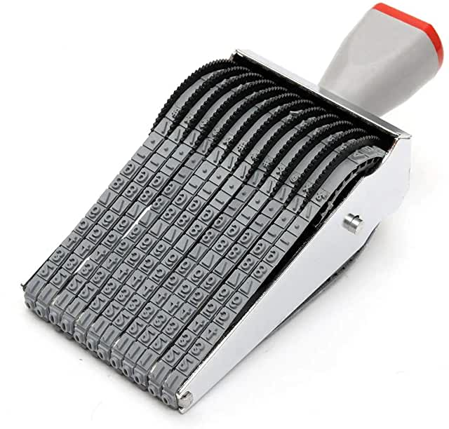
This picture has its own page with more detail, click here to see it.
Code numbering is an essential part of any testing program. This type of stamp is ideal for stamping code numbers and other information on plastic clay test specimens (e.g. SHAB test bars). Set up the run or recipe number on the left and the specimen number on the right. You can find these stamps on Amazon by searching "12 digit rolling alphabet symbol number stamp".
COSORI Food Dehydrator as a lab/studio drier
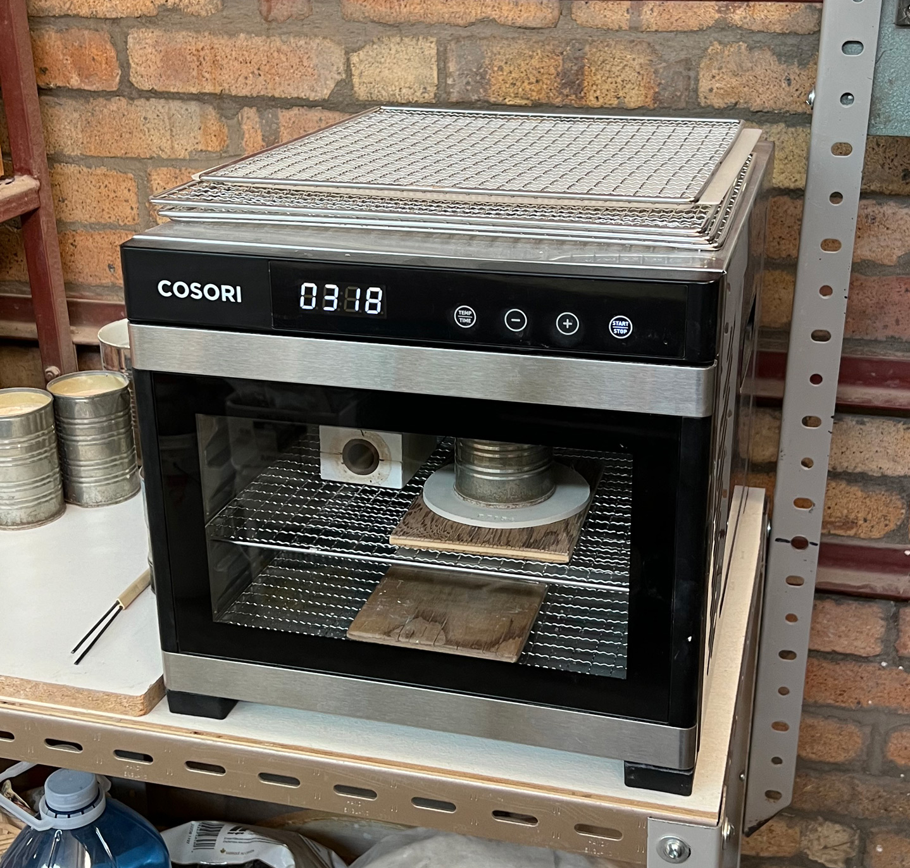
This picture has its own page with more detail, click here to see it.
I use this to dry our SHAB test samples and DFAC test samples. It has many racks, heats to 165F, has a timer and is well suited for the drying factor test (and drying all sorts of things). By adjusting the heat setting, it is possible to tune it to give a slight crack on our best drying clay (all other results are thus in relation to that). This oven is available on Amazon and is inexpensive.
Routine SHAB testing creates valuable historical drying and firing data
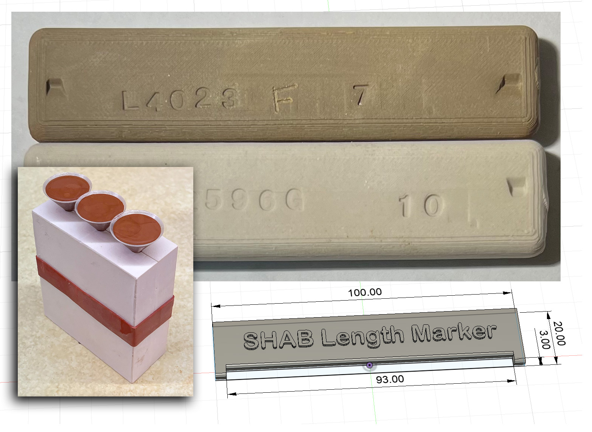
This picture has its own page with more detail, click here to see it.
Suddenly, ware is coming out of your production kiln warped or cracked or off color. Unless the answer is obvious, the first action should be to compare its drying and firing test data with past runs. If you are doing that as a routine, then SHAB test bars (and the test result data they bring) will already be available. These bars are tests of slip casting bodies, they can be made in a plaster mold and length-marked as shown. That data is a characterization of the clay body. The value of this kind of data-gathering becomes evident when a disaster happens (or better yet, is prevented). Clay bodies have plasticity, dry performance, dry strength, fired density, fired shrinkage, fired strength, etc. If you have historical data (accompanied by firing schedules, recipes, etc), you have an invaluable tool. Where does one gather the data? In spreadsheets? No, in a database. An account at Insight-live.com is specifically intended for this.
Fired clay test bars ready for measuring
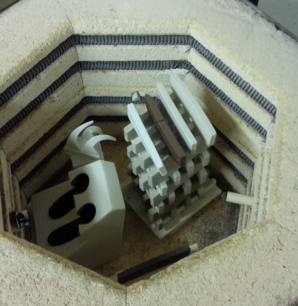
This picture has its own page with more detail, click here to see it.
SHAB (Shrinkage, Absorption) test bars ready to unload. These are measured for length after drying and firing and for weight after firing and boiling. This data is plugged into my account at insight-live.com and it calculates shrinkage and porosity numbers. If you fire bars of a clay to a range of temperatures you can characterize key properties of a clay very effectively.
Test bars from recent kiln firings
Here is how to enter the data into Insight-live
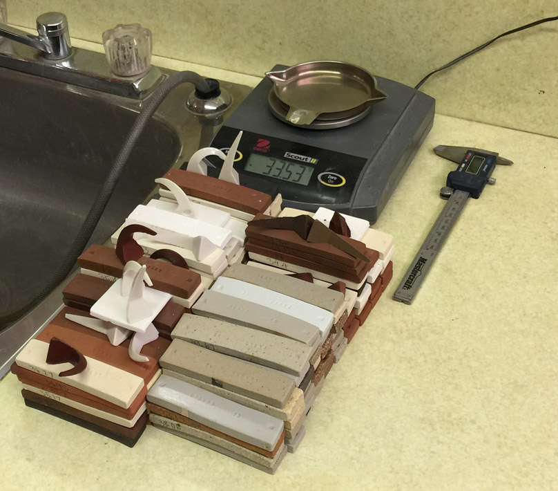
This picture has its own page with more detail, click here to see it.
Multiple batches of fired test bars, organized by temperature, have already been weighed and measured (the weights and lengths are written on the sides of the bars). Each batch is accompanied by the cones from the firing in the test kiln (these influence how the temperature is recorded and adjustments to kiln firing schedules). Since I am working on many runs, tests and projects at any given time, these tests pile up rapidly. And they generate a lot of SHAB test data that needs to be input into the Insight-live.com account promptly.
How many simultaneous testing projects can you manage at once?
This picture has its own page with more detail, click here to see it.
This two-inch pile of lab test body and glaze mix tickets is about half of what I have tested in the past year. I have added thousands of pictures too (using my smartphone). I just realized why I am doing a lot more testing. It is so much easier to organize the record keeping in my Insight-live.com account. I can manage so many separate testing projects. I have so much more of a sense that I am progressing. And it feels great to build such an organized set of records that I can refer back to.
Throwing a clay body is an invaluable physical test
But pieces need to be code numbered for tracking
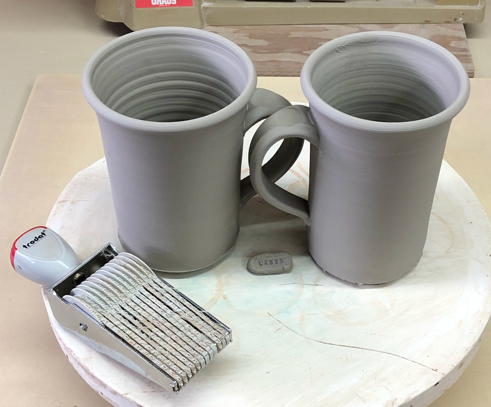
This picture has its own page with more detail, click here to see it.
Throwing a clay on a potters wheel gives immediate feedback on the physical properties (e.g. texture, plasticity, degree of softness, tendency to split, etc). A fancy report full of numbers gathered from expensive testing equipment takes a lot more time and is not likely to be as valuable as this. If you are doing testing, and everyone should be testing body and glaze variations, then all tests need to be identified. Do that with a code number that cross-references into your account at Insight-live.com.
880 bags of kaolin arrive. First step: Record the date code.
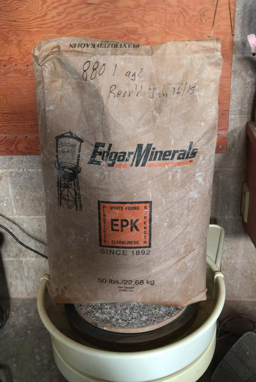
This picture has its own page with more detail, click here to see it.
A shipment EP Kaolin has arrived for use in some of our production porcelain and stoneware bodies. Of course, this needs to be tested before being put into product. But how? The first step is to create a new recipe record in my Insight-Live account, and find their production date code stamp on the bag. Hmmm. It does not have one! OK, then I need to record the date on which we received it. We need to save a bag on every pallet and sieve 50 grams through 100 mesh (to spot contamination). Then we'll make test bars (of all the samples mixed) to fire across a range of temperatures (to compare fired maturity with past shipments). We do a drying performance disk also to assess soluble salts.
In clay body testing it is about the data.
It reveals how a 20% feldspar addition affects this clay
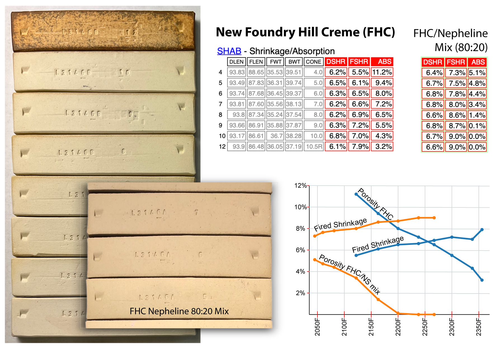
This picture has its own page with more detail, click here to see it.
Foundry Hill Creme (FHC) is used in North America as a stoneware body base or addition. It fires like a ball clay but it is less plastic. How much feldspar would it take to make it into a vitreous cone 6 stoneware? I fired SHAB test bars from cone 4 to 10 (bottom to top) and 10R (the soluble salts discolor it in reduction). The data collected (in an Insight-live.com group account) produces firing shrinkage and absorption data that calculates to the red columns (and plots to the blue lines). Notice how the porosity drops steadily from cone 3 to 10 (the firing shrinkage rises steadily over the same period). A 20% nepheline syenite addition plots to the orange lines. Notice 2200F (cone 6): The porosity drops from 8% to vitreous (zero) while the firing shrinkage increases 2%. The FHC drying shrinkage (the first DSHR red column) averages 0.3% lower than the mix; this is counterintuitive but a pleasant surprise. While the mix did have a higher water content (which would increase drying shrinkage), another factor appears to be how well this clay hosts the feldspar addition without compromising its own plasticity.
Can you afford to completely trust supplier body quality control reports?
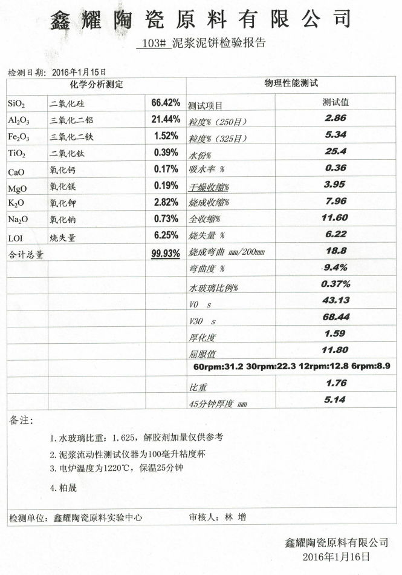
This picture has its own page with more detail, click here to see it.
This body is used in the sanitary ware industry in China, the supplier sends this report with each shipment. The chemistry and assorted values for porosity, shrinkage, particle size are provided. The factory receiving this report accepts it as gospel and goes into production. However engineers at the plant need to think twice about such reports. These tests are being done at one temperature, they say nothing about what that body is doing above and below that temperature. Is it being employed in a volatile range of the porosity or firing shrinkage curves? Zero porosity bodies of this type are best when fired to a point near where the porosity curve descends to reach the x-axis. However that curve remains at zero while the shrinkage one tops out and reverses direction. At some point the porosity curve sharply rises. Only by firing and testing at a range of temperatures in your own lab can you where your body is on the curve.
Setting up a Clay Testing Program

This picture has its own page with more detail, click here to see it.
It is time to start managing quality control of the clay bodies you manufacture for customers. A good program ensures that your technicians are keenly aware of the variability of material supplies (both in physical properties and simple availability). But your customers are blissfully unaware, all they will see are consistent products because of the compensatory measures you take! These measures are enabled by visibility into clay body properties that only data can give. Structured procedures, a robust code-numbering system and our onboarding help can empower your staff to get started now on accumulating a history of testing data. We are practical. The supplies and equipment you need are within the each reach of any company or even individual. This is not boring lab work, our approach makes it exciting! Your group will be able to track a pipeline with hundreds of specimens going in and analyze a river of measurement data coming out.
Protect your reputation as a clay body manufacturer.
Unready Freddie is not monitoring incoming clays!
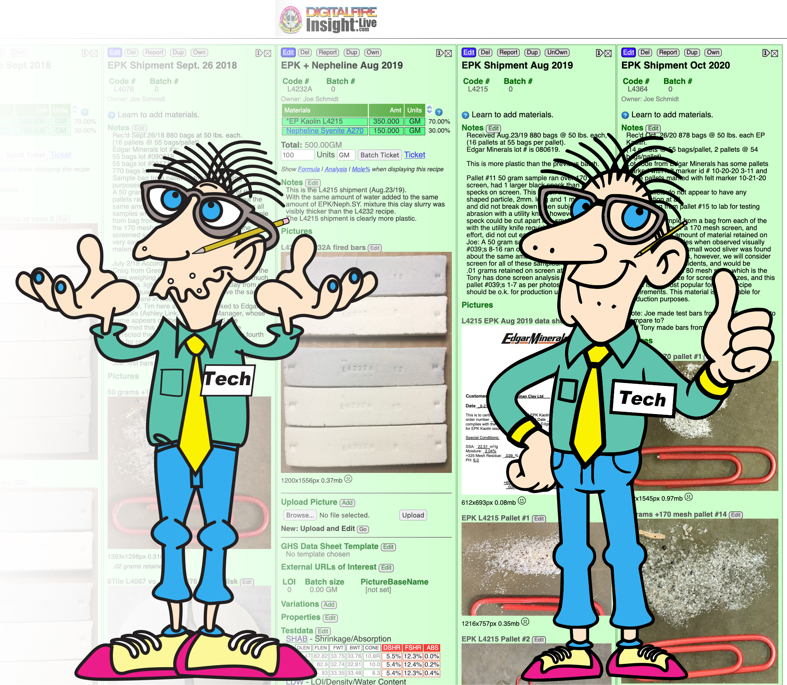
This picture has its own page with more detail, click here to see it.
A kaolin shipment just came in. "UnReady Freddie" is panicking. He thinks he remembers that products made with the last shipment were lacking plasticity and the fired color was off. He is going to have to come up with different lame excuses for complaining customers this time.
"Ready Freddie" has Insight-Live and has collected years of data on incoming shipments in one searchable place. He knows what to check on each and has fired bars, in-mix tests, particle size checks, data sheets, lots of pictures, notes, etc. He also has traceability - he knows what material batch went into what product. He works with production to do material lot tracking and with purchasing to keep suppliers aware he is testing. Because Ready Freddie knows how materials vary he can compensate recipes and processes so customers see a consistent product.
UnReady Freddie has a few spreadsheets somewhere. But he is busy with other things. Who do you want in charge of product consistency (and company reputation)? Here is what to do next: Have your technician study the page "Testing a New Load of EP Kaolin" (link below). You will be hearing from him/her soon.
Is your clay supplier testing incoming materials?
Monitoring the properties of clay bodies they sell?
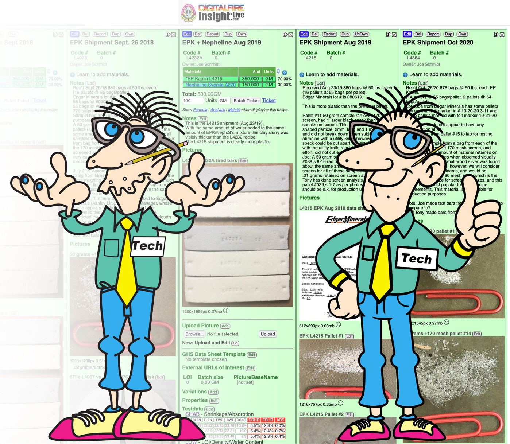
This picture has its own page with more detail, click here to see it.
A kaolin shipment just came in. "UnReady Freddie" is panicking. Customers have been complaining about bodies containing this. He doesn't know what to do because he has poor records. But he has a new excuse when you complain this time.
"Ready Freddie" has Insight-Live and has collected years of data on incoming material shipments in one searchable place. He knows what to check on each and has fired bars, in-mix tests, particle size checks, data sheets, lots of pictures, notes, etc. He works with production to do material lot tracking so he knows what materials went into the code numbered boxes you bought. And he keeps suppliers aware he is testing. He leverages the data to compensate recipes and processes so you see a consistent product despite material variations.
If you want more consistent clay bodies from your supplier ask about their testing program. Ask if they know about Digitalfire Insight-live.com. Give them a link to this page.
Links
| Tests |
Shrinkage/Absorption Test
SHAB Shrinkage and absorption test procedure for plastic clay bodies and materials |
| Tests |
Drying Factor
The DFAC Drying Factor test visually displays a plastic clay's response to very uneven drying. It is beneficial to show the relative drying performance of different clays. |
| Tests |
Sieve Analysis 35-325 Wet
A measure of particle size distribution by washing a powdered or slaked sample through a series of successively finer sieves |
| Tests |
LOI/Density/Water Content
LDW LOI, density and water content test procedure for plastic clay bodies and porcelains |
| Articles |
Simple Physical Testing of Clays
Learn to test your clay bodies and clay materials and record the results in an organized way, understanding the purpose of each test and how to relate its results to changes that need to be made in process, recipe and materials. |
| Articles |
How to Find and Test Your Own Native Clays
Some of the key tests needed to really understand what a clay is and what it can be used for can be done with inexpensive equipment and simple procedures. These practical tests can give you a better picture than a data sheet full of numbers. |
| Glossary |
Slurry Up
The process of slurrying a clay body powder and dewatering it on a plastic slab or table. |
| Glossary |
Physical Testing
In ceramics, glazes, engobes and bodies have chemistries and physics. Your formulation and quality control most likely need to focus on the physical properties. |
| Video 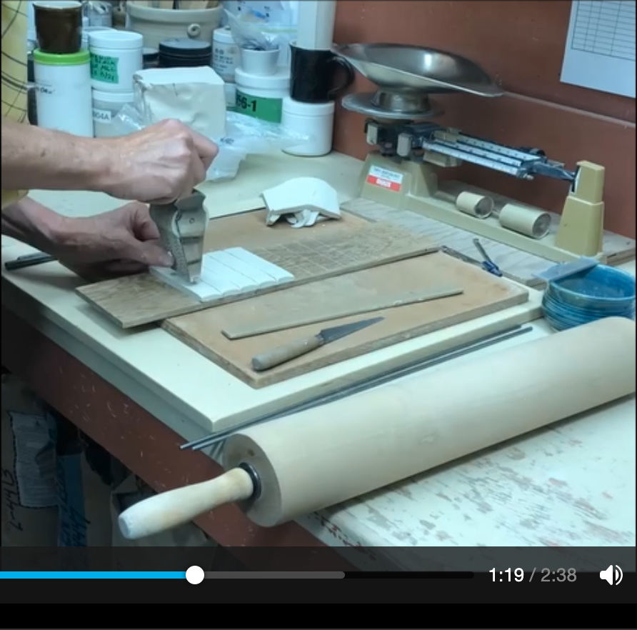 |
Making test bars for the SHAB, LDW and DFAC tests
We will make bars of a clay body for the SHAB test (for shrinkage and absorption), a specimen for weighing wet, dry and then fired (to get water content and LOI) and a drying disk to measure drying performance and soluble salt content. |
Video |
Entering TestData Into Insight-Live
How to enter physical testing results into your group account at insight-live.com. We will enter data from shrinkage/absorption bars, the drying factor disk and an LOI/water content tester. |
 PayPal | No tracking, No ads, No paywall, No transient content! Just organized, concise information constantly updated and improved. Was this helpful? Consider supporting me. |
| By Tony Hansen Follow me on        |  |
Got a Question?
Buy me a coffee and we can talk 

https://digitalfire.com, All Rights Reserved
Privacy Policy